Mapeamento de camadas¶
Mapear uma camada no arranjo envolve duas perguntas diferentes. A primeira é como o arranjo calcula: o mecanismo é sempre o mesmo e é apresentado primeiro, em um arranjo \(2\times2\) com números pequenos. A segunda é o que colocar em cada linha e em cada coluna, e é aí que a convolução e a camada densa diferem. Para simplificar as contas, os exemplos omitem o viés e a divisão da PPU, que só reescalam o resultado.
Como o arranjo calcula¶
A ideia central¶
Cada linha do arranjo recebe um vetor de entrada, cada coluna recebe um vetor de pesos, e cada PE calcula o produto escalar entre o vetor da sua linha e o vetor da sua coluna.
No arranjo \(2\times2\) da figura, as linhas recebem \(\mathbf a_0=(1,2,3)\) e \(\mathbf a_1=(2,1,1)\), e as colunas recebem \(\mathbf w_0=(1,2,1)\) e \(\mathbf w_1=(2,1,3)\). Ao final, o PE\(_{00}\) deve conter \(\mathbf a_0\cdot\mathbf w_0=1\cdot1+2\cdot2+3\cdot1=8\); o PE\(_{01}\), \(\mathbf a_0\cdot\mathbf w_1=13\); o PE\(_{10}\), \(\mathbf a_1\cdot\mathbf w_0=5\); e o PE\(_{11}\), \(\mathbf a_1\cdot\mathbf w_1=8\).
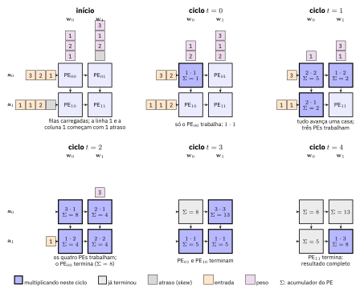
Ciclo a ciclo¶
Os valores esperam em filas, com o primeiro elemento de cada vetor na ponta, junto ao arranjo. A cada ciclo, cada PE faz duas coisas: multiplica o par que está recebendo e soma o produto ao acumulador \(\Sigma\); e repassa a entrada ao vizinho da direita e o peso ao vizinho de baixo. Seguindo a figura:
- Início: a linha 1 e a coluna 1 começam com uma casa vazia, o atraso (skew), cuja razão aparece no ciclo 1.
- Ciclo 0: só o PE\(_{00}\) tem os dois operandos; ele calcula \(1\cdot1\), e \(\Sigma=1\).
- Ciclo 1: tudo anda uma casa. O PE\(_{00}\) recebe o segundo par (\(2\cdot2\), \(\Sigma=5\)). O PE\(_{01}\) recebe a entrada 1 que o PE\(_{00}\) acabou de repassar e o primeiro peso de \(\mathbf w_1\) (\(1\cdot2\)). O PE\(_{10}\) recebe o peso 1 que desceu do PE\(_{00}\) e, no mesmo ciclo, o primeiro elemento de \(\mathbf a_1\), que esperou um ciclo na casa de atraso (\(2\cdot1\)). Sem o atraso, esse 2 teria chegado no ciclo 0, antes do peso com que deve ser multiplicado.
- Ciclo 2: os quatro PEs trabalham, e o PE\(_{00}\) faz sua última multiplicação: \(\Sigma=8\).
- Ciclos 3 e 4: os PEs mais afastados terminam; o último é o PE\(_{11}\), no ciclo 4.
Ao final, os acumuladores contêm exatamente os quatro produtos escalares esperados. As entradas e os pesos atravessam o arranjo, mas cada resultado fica parado no seu PE do começo ao fim: é o fluxo estacionário na saída.
A frente de onda¶
Em geral, o elemento \(k\) do vetor da linha \(i\) encontra o elemento \(k\) do vetor da coluna \(j\) no PE\(_{ij}\) no ciclo
No arranjo real, \(4\times4\), nada muda além do tamanho: são quatro vetores de entrada e quatro de pesos, com \(K\) elementos cada, e a última multiplicação ocorre no ciclo \((K-1)+3+3\). No hardware, as filas são as duas memórias locais da NPU: a cada ciclo, uma palavra de 32 bits da memória de entradas fornece um elemento para cada linha (o byte \(i\) vai para a linha \(i\)), e uma palavra da memória de pesos, um elemento para cada coluna (o byte \(j\) vai para a coluna \(j\)).
Convolução¶
O exemplo usa uma imagem \(5\times5\) com um traço diagonal e quatro filtros \(3\times3\) com papéis fáceis de reconhecer: borda vertical (F0), borda horizontal (F1) e as duas diagonais (F2 e F3). Antes de ir ao arranjo, vejamos qual conta precisa ser feita.
A conta¶
Com passo \(s=2\) e sem o viés, a saída do filtro \(c\) na posição \((u,v)\) é
coloca-se o filtro sobre a janela de \(3\times3\) pixels que começa em \((2u,2v)\), multiplicam-se os valores sobrepostos e somam-se os 9 produtos. Com \(5\times5\) pixels e passo 2, há \(2\times2\) posições, ou seja, quatro janelas, J0 a J3. Elas se sobrepõem na linha e na coluna centrais da imagem, porque o passo (2) é menor que o lado do filtro (3).
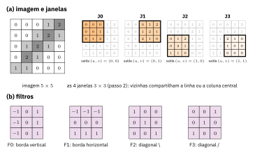
Vale fazer uma dessas contas à mão. Para a janela J1, na posição \((u,v)=(0,1)\), com o filtro F3, da diagonal "/":
O filtro só "enxerga" os três pixels da diagonal "/" da janela, e o resultado é alto porque o traço passa justamente por eles. Repetindo a conta para as quatro janelas e os quatro filtros, obtêm-se 16 saídas. São esses 16 números que o arranjo precisa produzir.
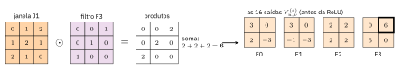
A convolução como produto de matrizes (im2col)¶
Para chegar ao arranjo, falta escrever a mesma conta como um produto de matrizes. A soma dupla é, na verdade, um produto escalar entre 9 pixels e 9 pesos: basta achatar a janela e o filtro, linha a linha, em vetores de 9 elementos. É o que faz a técnica im2col: cada janela vira uma linha da matriz \(\mathbf P\) (\(4\times9\)), e cada filtro, uma coluna da matriz \(\tilde{\mathbf K}^{\top}\) (\(9\times4\)). As 16 saídas formam o produto
A saída calculada à mão é o elemento \(c_{13}\): a linha de J1 vezes a coluna de F3. Comparando com o mecanismo do arranjo, cada \(c_{ij}\) é exatamente o produto escalar que o PE\(_{ij}\) calcula. A alocação sai daí: a janela \(i\) vai para a linha \(i\) do arranjo, e o filtro \(j\), para a coluna \(j\). Como há quatro janelas e quatro filtros, a convolução inteira cabe em uma única passagem.
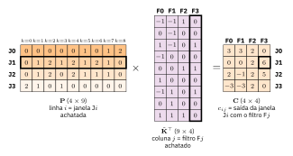
Entrada dos dados no arranjo¶
Resta levar esse produto ao arranjo, aplicando o mecanismo com quatro linhas, quatro colunas e \(K=9\): a linha \(i\) recebe a linha \(i\) de \(\mathbf P\) (os 9 pixels da janela J\(i\)), e a coluna \(j\), a coluna \(j\) de \(\tilde{\mathbf K}^{\top}\) (os 9 pesos do filtro F\(j\)), com os mesmos atrasos de \(i\) e \(j\) casas. Na memória, cada palavra de 32 bits é uma "fatia" das quatro filas: a palavra \(k\) das entradas junta o pixel \(k\) das quatro janelas, e a palavra \(k\) dos pesos, o peso \(k\) dos quatro filtros. A primeira palavra de entradas é \((0,0,0,2)\), e a primeira de pesos, \((-1,-1,1,0)\).
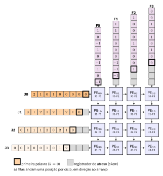
O cálculo¶
Com os dados nas filas, o cálculo avança em diagonal, seguindo a frente de onda \(t=k+i+j\). No ciclo 0, só o PE\(_{00}\) trabalha; entre os ciclos 6 e 8, os 16 PEs trabalham ao mesmo tempo, cada um em um passo \(k\) diferente; e no ciclo \(8+3+3=14\) o PE\(_{33}\) faz o último produto. Cada PE executa as 9 multiplicações do seu par janela-filtro; o PE\(_{13}\), por exemplo, refaz a conta manual, um produto por ciclo, entre os ciclos 4 e 12, e termina com \(\Sigma=6\).
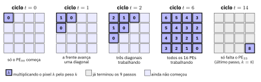
A saída¶
Ao fim da passagem, o arranjo contém a matriz \(\mathbf C\). A PPU zera os valores negativos (ReLU), e os acumuladores descem para a saída uma linha por vez; por padrão, a partir da linha 3, mas o formatador de saída da NPU pode entregá-las na ordem 0 a 3. Cada palavra traz, portanto, os quatro filtros de uma mesma janela, e as palavras gravadas em sequência formam o vetor de ativações já na ordem NHWC (os quatro canais de cada posição juntos), que é a ordem em que a camada densa seguinte espera os dados.
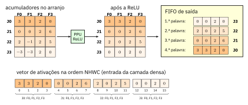
Camada densa e modo GEMV¶
A conta¶
Na camada densa, cada neurônio está ligado a todas as entradas. O exemplo tem 5 entradas e 6 neurônios: cada uma das 5 ativações \(\tilde a_k\) chega a cada um dos 6 neurônios por uma ligação com peso próprio, num total de 30 pesos. Cada neurônio multiplica cada entrada pelo peso da ligação por onde ela chega e soma os produtos. Para o neurônio N0, cujos pesos são \(1\), \(-1\), \(0\), \(2\) e \(1\):
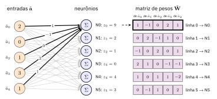
Para fazer a conta de todos os neurônios de uma vez, os pesos que chegam ao neurônio \(n\) formam a linha \(n\) de uma matriz \(\tilde{\mathbf W}\), e a camada inteira é um produto de matriz por vetor:
No exemplo, com \(K=5\) entradas e 6 neurônios, sem o viés:
Cada \(z_n\) é, de novo, um produto escalar, agora entre o vetor de entradas e o vetor de pesos do neurônio \(n\). Pelo mecanismo do arranjo, isso indica a alocação das colunas: os pesos do neurônio \(n\) ocupam uma coluna do arranjo. Como há quatro colunas, os neurônios são processados de quatro em quatro, um bloco por passagem: \(\mathbf z_{0..3}\) na primeira e \(\mathbf z_{4..5}\) na segunda, completada com dois neurônios nulos.
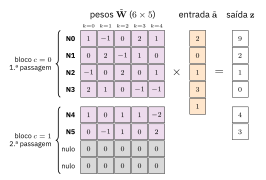
Modo GEMV¶
A diferença em relação à convolução está nas linhas, e vale construí-la por etapas.
Primeira tentativa: uma linha só. Na convolução, cada linha do arranjo recebe uma janela diferente. Na camada densa, com uma imagem por vez, só existe um vetor de entradas. A alocação direta seria colocá-lo na linha 0, com um neurônio em cada coluna. Funciona, mas as linhas 1 a 3 não teriam o que fazer: 12 dos 16 PEs multiplicariam zeros, e a passagem levaria um passo por entrada.
A ideia: dividir a soma entre as linhas. A conta de cada neurônio é uma soma de produtos, e uma soma pode ser quebrada em pedaços e juntada no fim. Para \(z_0\):
É o que faz o modo de produto matriz-vetor (GEMV) da NPU: o vetor de entradas é repartido entre as quatro linhas, e cada PE acumula um pedaço do produto escalar do neurônio da sua coluna. A linha \(i\) recebe as entradas \(k\equiv i\pmod 4\), isto é, \(\tilde a_i,\tilde a_{i+4},\tilde a_{i+8},\dots\) As colunas não mudam: cada coluna continua sendo um neurônio. Como as quatro linhas trabalham ao mesmo tempo, a passagem do exemplo leva 2 passos em vez de 5. Ao fim dela, o PE\(_{ij}\) guarda uma soma parcial \(s_{ij}\), e o neurônio completo é a soma da sua coluna, feita pela NPU antes da PPU:
Por que os pesos não descem mais pela coluna. Na convolução, todos os PEs de uma coluna usam o mesmo peso no mesmo passo, pois é o mesmo filtro aplicado a janelas diferentes; por isso o peso entra pelo topo e desce de PE em PE. No GEMV, isso deixa de valer: no primeiro passo da coluna N0, o PE\(_{00}\) multiplica a entrada 0 e precisa do peso \(\tilde W_{0,0}=1\); o PE\(_{10}\) multiplica a entrada 1 e precisa de \(\tilde W_{0,1}=-1\); e assim por diante. Cada PE da coluna precisa de um peso diferente. Por isso, a memória de pesos é dividida em quatro bancos, que entregam 16 pesos de uma vez a cada passo, um para cada PE, e um multiplexador em cada PE escolhe esse peso próprio no lugar do que vem de cima. A ligação vertical continua existindo no hardware, pois a convolução a usa, mas é ignorada neste modo.
Entrada dos dados no modo GEMV¶
As 5 entradas, completadas com zeros até 8, cabem em dois passos (\(t=0\) e \(t=1\)). Na memória de entradas, a palavra \(t\) traz as entradas \(4t\) a \(4t+3\), e o byte \(i\) vai para a linha \(i\). Nos pesos, o banco \(i\) guarda, no passo \(t\), a palavra da entrada \(k=4t+i\), com o peso do neurônio N\(j\) no byte \(j\): o PE\(_{ij}\) recebe o byte \(j\) do banco \(i\). Resta acertar o tempo: a entrada \(\tilde a_{4t+i}\) começa \(i\) ciclos atrasada e leva mais \(j\) ciclos para andar até a coluna \(j\); por isso, o peso do PE\(_{ij}\) também é atrasado em \(i+j\) ciclos, e os dois se encontram no ciclo \(t+i+j\), a mesma frente de onda da convolução.
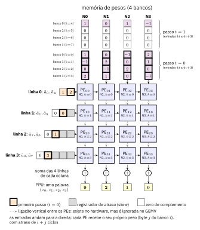
Ao fim da passagem, cada PE contém uma soma parcial. Na coluna do neurônio N0, o PE\(_{00}\) acumula \(1\cdot2+1\cdot1=3\); o PE\(_{10}\), \((-1)\cdot0=0\); o PE\(_{20}\), \(0\cdot1=0\); e o PE\(_{30}\), \(2\cdot3=6\). A soma da coluna, \(3+0+0+6=9\), é exatamente \(z_0\). As outras colunas dão \(z_1=2\), \(z_2=1\) e \(z_3=0\), e a PPU entrega os quatro numa única palavra. Na segunda passagem, a NPU relê as mesmas entradas, e as colunas recebem os pesos de N4, N5 e dos dois neurônios nulos, produzindo \(z_4=4\) e \(z_5=3\).
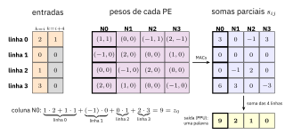
Com essa alocação, os 16 PEs trabalham também na camada densa, e cada passagem leva \(\lceil K/4\rceil\) passos em vez de \(K\). Na memória, a palavra \(t\) de entradas traz as entradas \(4t\) a \(4t+3\), uma por byte, o mesmo formato em que a convolução entrega as suas saídas: a saída de uma camada já é a entrada da outra.
O fluxo de dados no modo GEMV¶
Essa divisão muda a classificação do fluxo de dados. Na taxonomia usual, um fluxo é caracterizado pelo dado que permanece no PE e pelo modo como os demais são reaproveitados. No modo GEMV:
- as somas parciais continuam estacionárias, como na convolução: cada PE acumula localmente do primeiro ao último passo;
- o resultado final \(z_j\), porém, não fica em um único PE: ele é repartido entre os quatro PEs da coluna e só se forma na soma feita fora do arranjo;
- as entradas continuam sistólicas, andando para a direita e servindo aos quatro neurônios da linha;
- os pesos não são reaproveitados: com uma única imagem, cada peso de uma camada densa é usado exatamente uma vez, e o que limita o arranjo é a banda da memória de pesos, que precisa entregar 16 pesos por ciclo.
O modo GEMV é, portanto, uma variação híbrida do fluxo estacionário na saída: estacionário nas somas parciais, sistólico nas entradas, sem reuso dos pesos e com uma redução espacial ao final. A convolução, em que todos esses reusos existem, continua usando o fluxo estacionário na saída puro.
Da ilustração à rede real¶
Na rede real, cada camada repete os exemplos com dimensões maiores. A imagem \(28\times28\) tem 169 janelas, que, completadas com três janelas nulas, formam 43 grupos de quatro; cada grupo é uma passagem idêntica à do exemplo da convolução, com os mesmos 9 pesos e quatro janelas novas. A camada densa tem 676 entradas e 10 neurônios e roda no modo GEMV: três passagens de \(676/4=169\) passos, a última com dois neurônios nulos. Na NPU, as janelas da convolução nunca são gravadas: o im2col em hardware monta cada palavra de entrada a partir da imagem crua, no momento da leitura.
| Convolução | Camada densa | |
|---|---|---|
| Linha \(i\) recebe | janela \(4g+i\) | entradas \(k\equiv i \pmod 4\) |
| Coluna \(j\) recebe | filtro \(j\) | neurônio \(4c+j\) |
| Passos por passagem | 9 | 169 |
| Passagens | 43 | 3 |
| Relido a cada passagem | pesos | entradas |
| MACs úteis | 98% | 83% |
Das \(3\cdot169\cdot16=8.112\) MACs que o arranjo executa na camada densa, 6.760 são úteis, cerca de 83%; com a entrada ocupando uma única linha, seriam 32.448 MACs, das quais 21% úteis.
Como o firmware alimenta a NPU com essas camadas, com pesos residentes, im2col em hardware e o programa de descritores, está no estudo de caso.